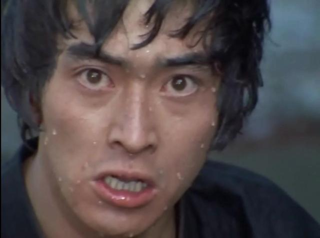

今天在健身房，教练看我组间休息跟我聊了聊。我说起了我会花挺多时间练心肺体能。
教练摸了摸我的肚子表示我其实可以只以增肌为主，体能训练反而会减少肌肉。
“肌肉减少我可以接受的”
“是么，还是看起来壮一些比较好”
“和平年代无需强壮”
教练感觉我这说法挺有意思，又凑过来悄悄跟我说：“现在妹子都喜欢肌肉大的男生”
“呃…不用不用，不追求这个！”
老子健身，怎么会为了这些个乱七八糟的理由呢。我回想，小时候看雷欧奥特曼的时候，凤源跟一个小男孩说“你必须经历身体疲惫、饥肠辘辘的时候”，那句话就像是跟我说的一样，让我记住了这么久。健身应该是一种修行。

2018年06月20日